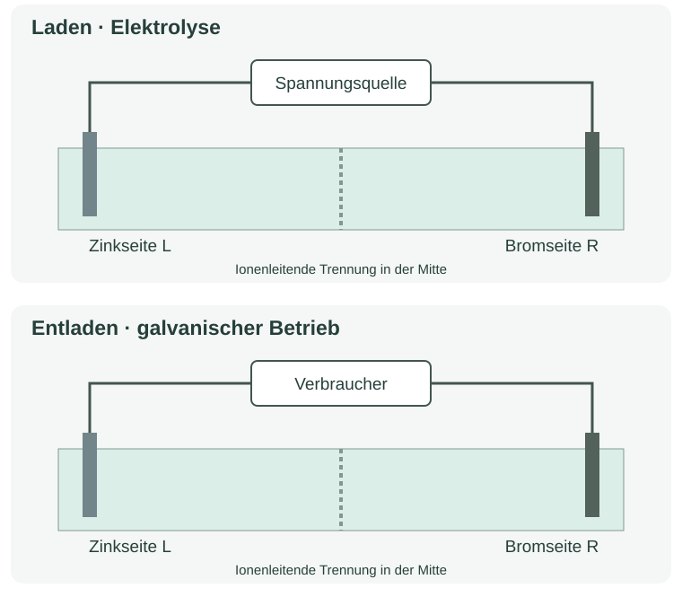

5.2 · Laden und Entladen beschriften
Ergänze Anode/Kathode, Plus/Minus, Elektrodenreaktionen und äußere Elektronenwege. Benenne getrennt davon die Ladungsträger im Elektrolyten. Das Zinkbromid-Modell ist ein Medienmodell, keine Versuchsanleitung.

Begründung / Ergebnis: ___________________________________________________
______________________________________________________________________
______________________________________________________________________
Chemie · Jahrgang 13 · Eigenständig erstelltes Übungsmaterial